ID Portfolio
Hive Jr: Interdisciplinary Capstone Project
We worked with CamelBak Products, LLC to expand their product line with a focus on catering to outdoor hydration and carrying needs. The sponsor was looking to expand their target market to include millennial families.
The observed outcome of this project was be a product that simplified the process for getting outdoors as a family to go day hiking. The proposed product will be an essential tool used by families when considering any outdoor activities. There is no existing product for this identified market, therefore there is a lot of opportunity. With the findings presented in a report to the sponsor, the outdoor goods company will be able to expand their lines and reach a new audience, ultimately shaping the outdoor experience for families.
Process:


As a group we decided to come up with bioinspired designs and unique shapes. Our first design iteration consisted of 16 sketches, of which we picked 4 of to make physical paper prototypes of with detailed sketches. After conducting surverys on functionality and design preferences, a cloth prototype was made in order to test the product further from which a final design was derived.
Final Product:


Scooting Through Atlanta (Interactive Product Design)
This project consisted of creating a new game controller and console that reset the standard for arcade games. Inspired by the old driving games, we decided to create 'Scooter Through Atlanta'. The project had three main parts: the prototype of the controller (our scooter), the mechanics of the game which were done with an Arduino, and the Processing portion which created the physical game.
Game Play:
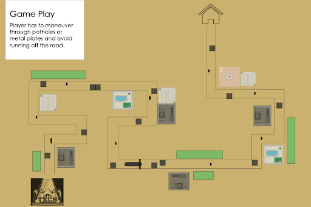
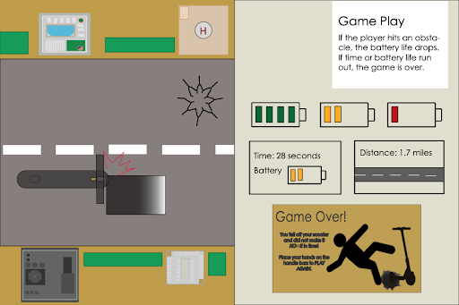
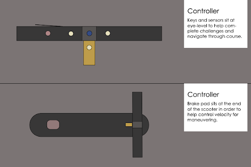
Schematics:
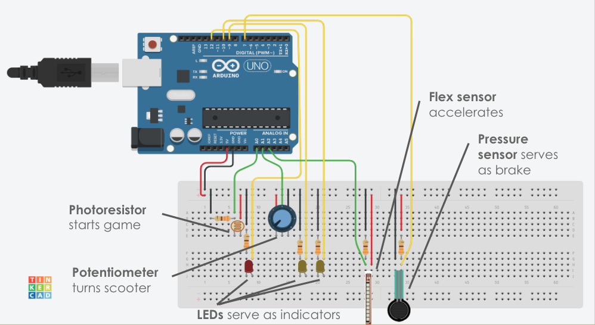
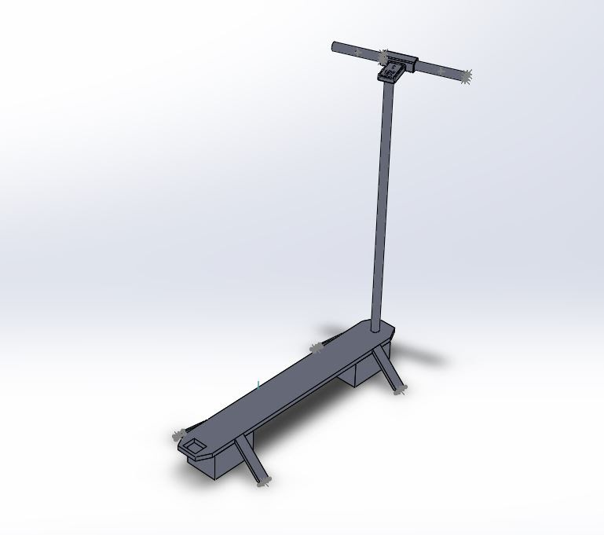
I was in charge of assembling the Arduino components and putting together the scooter. First, each of the components was created and tested, then they were integrated into the scooter one at a time to ensure each worked properly. This presented a lot of challenges since the controller was designed per existing scooter dimensions, and the wires had to be up to 5 feet long.
Final Product:
Todoist Field Research (User Centered Design)
This project incorporated user-centric design methods used to identify, understand, assess and prioritize the factors that contribute to more effective design solutions.
Methods such as stakeholder identification and analysis (customer discovery), needfinding, social ethnography, videography, as well as introductions to the behavioral and social sciences (psychology, sociology, anthropology, etc) were used and magnified through a design lens. The objective of this project was to identify reasons why Todoist's projected market was not utilizing the product, and to find a solution to the "why". The research and solution is found below.
3D Modeling on Fusion
Chess Board and Pieces
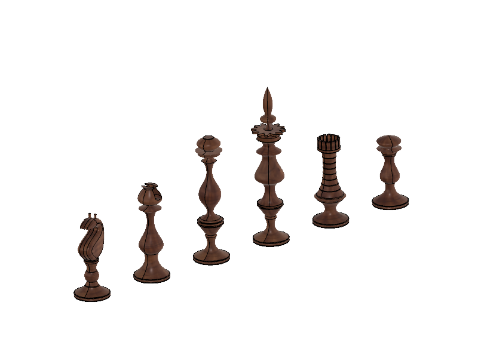
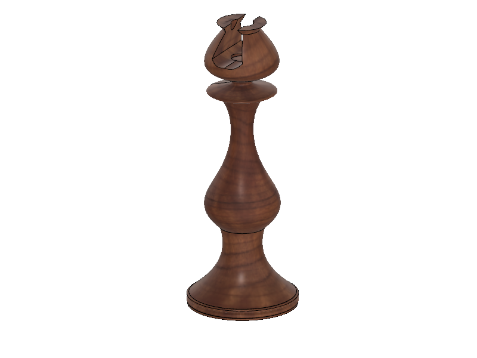
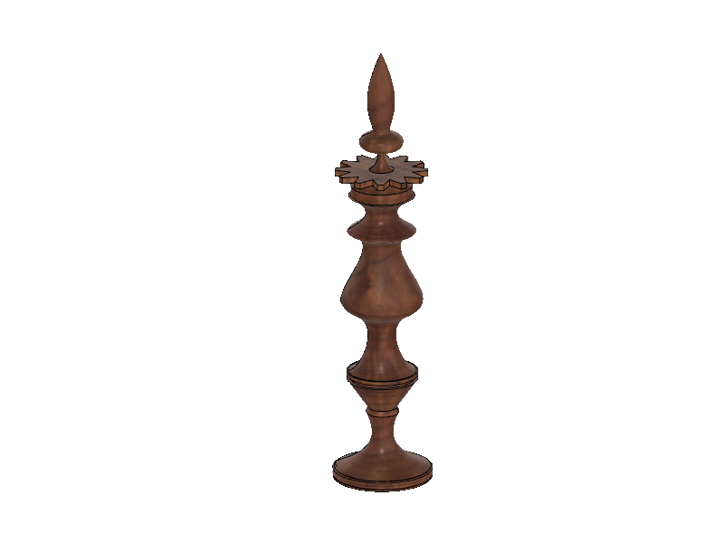
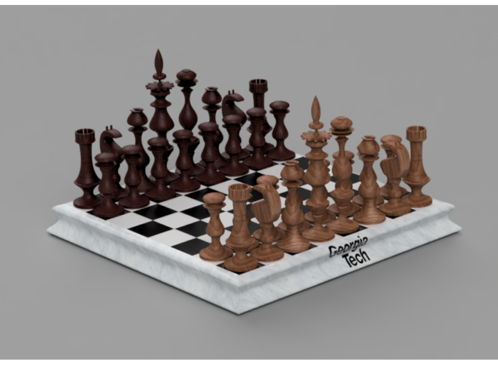
TV Remote
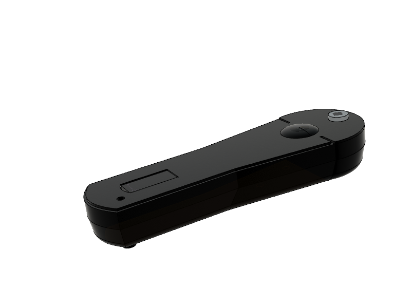
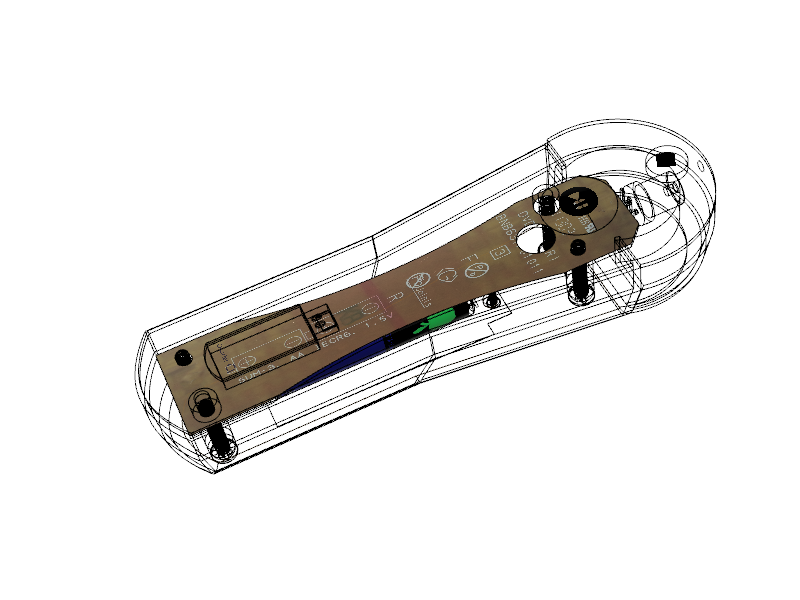
Rubber Toy
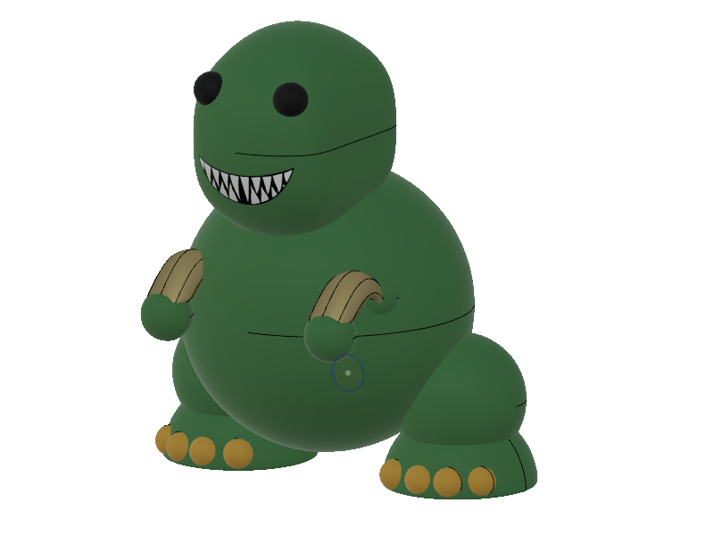
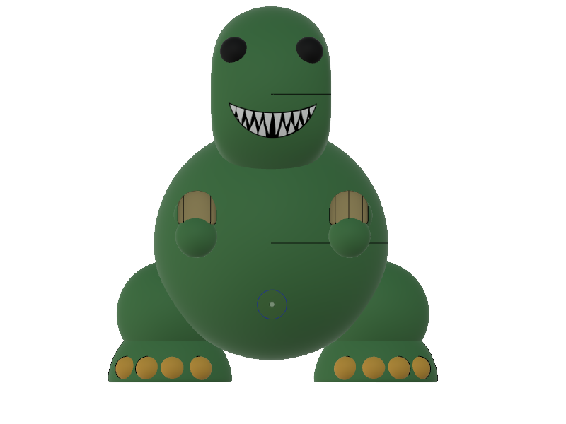
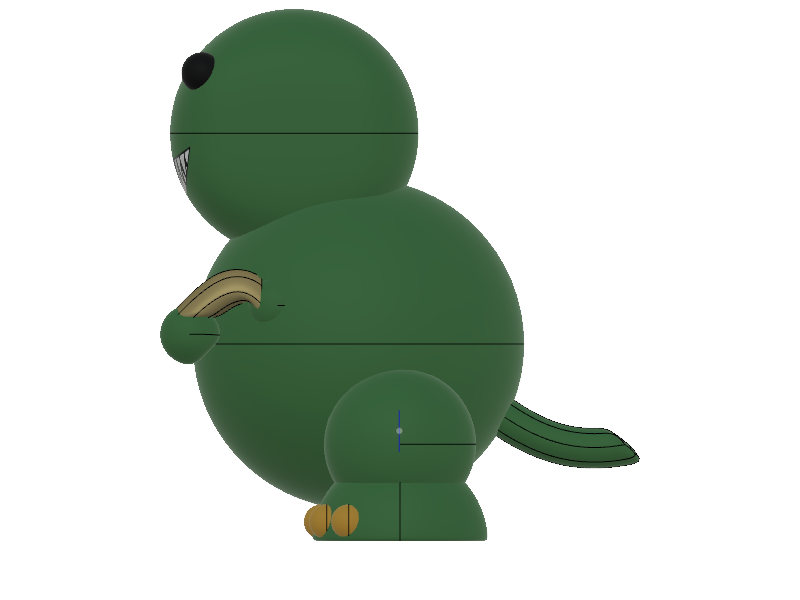